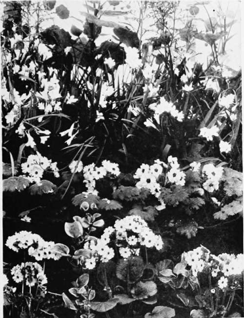

XXXII. Bulbs For The Winter Window-Garden. Part 4
Description
This section is from the book "Indoor Gardening", by Eben E. Rexford. Also available from Amazon: Indoor Gardening.
XXXII. Bulbs For The Winter Window-Garden. Part 4
A succession of bloom can be secured by potting bulbs at intervals of ten days or two weeks.
Be sure to wrap those you hold in reserve for future plantings in thick paper to prevent light from getting to them, and keep them in a cool place.
It was formerly considered necessary to put potted bulbs in a place where they would freeze. But this theory of a very low temperature being necessary to the satisfactory development of working roots has been most effectually set aside of late years. Experience has proved that bulbs stored in a place that is cool and dark give quite as satisfactory results as those subjected to freezing conditions.
If you have a cellar, put them there. If you have no cellar, store them in an old shed, or an unused room-any place, will answer, if it can be made dark and kept cooL
If the bulbs are watered well at time of potting, they will not be likely to need watering again during their stay in cold storage, as evaporation, under the conditions which should prevail there, will take place very slowly. But to make sure of this, examine them occasionally, and if the soil seems quite dry, apply a moderate amount of water.
To ascertain the stage of root development invert a pot and turn out the ball of earth. (It may be well to water, before doing this, as the soil, if rather dry, will be likely to break apart.) If tiny white roots show in it, be satisfied that matters are progressing favorably.
If you find a plant that has begun to make top-growth, while yet in cold storage, bring it to the light at once. To leave it there after it has begun to send up leaves or a stalk, would be to run the risk of blasted flowers.
Very frequently Hyacinths fail to satisfactorily develop their flower-stalks. You will discover a cluster of buds away down among the green leaves just unfolding, and there it will remain, day after day, evidently inclined to do its part, but unable, for some reason, to do so. As soon as you notice this tendency to stand still, make a cone of thick brown paper large enough to fit the top of the pot. Cut off about an inch of its apex, and invert it over the plant. Very shortly its desire to get to the light will cause it to reach up, and, an effort once made in this direction, the chances are that it will speedily develop.
In order to prolong the life of the flowers of your bulbs, keep them in a cool room, if possible, especially at night.
Sometimes aphides will literally cover the young growth of Tulip and Hyacinth. They will seem to come in a night. Where they come from, so suddenly, and in such numbers, you cannot imagine. But there they are, and something must be done, at once, to rout them before they have sapped your plants of their life-blood. Prepare an infusion of Nicotocide, as advised by the manufacturer, and wash the infested plants with it. It will be well to use a soft, camel's-hair brush, which can be worked down in among the tender leaves without injuring them.
The stalks of the Easter Lily should be given firm support as they develop. If this is not done, they frequently take on awkward shapes, and make anything but symmetrical plants.
A north window is much better for flowering bulbs, after they come into bloom, than a window where the sunshine is admitted freely.
The question is often asked: What shall we do with our bulbs after they have blossomed. Can they be carried over for another season's use ?
To this I always reply: A bulb that has been forced into bloom in the house can never be depended an to give a good crop of flowers again, under similar conditions. They may do so, but the probabilities are that they will not, and we can not afford to take the chances of being disappointed by them. Therefore I would advise the purchase of fresh bulbs each season.
What sizes shall we get ? I am often asked. I prefer large bulbs, because they generally give us a more generous crop of flowers than we are likely to get from the smaller ones.
Primroses, Primulas, And Freesias.
Especially is this the case with the Bermuda Lily. Bulbs of only ordinary size seldom have more than three or four flowers, while the extra large bulbs often produce as many as twelve or fifteen flowers. Of course they cost considerably more, but I consider them well worth the difference in price.
If you purchase your bulbs of a local dealer, examine them before buying. If they feel firm, and seem heavy in the hand, they are good. But if they seem flabby, and lack the feeling of heaviness, don't invest in them.
There are other bulbs very satisfactory for winter use, and many of them can be grown with little trouble. The Freesia is one of the best of these. It is lovely in its glistening white purity, and deliciously sweet in fragrance. Put half a dozen or more bulbs in six-inch pots, in the compost advised for other bulbs, but do not put them into cold storage. Simply keep in some quiet place until growth begins, then give thern a place near the glass.
The Ixia is becoming more popular as its merits become more generally known. Its flowers include many shades of yellow, pink, scarlet, and crimson.
The Crocus is a charming little thing. Put several bulbs into each pot. This comes in blue, purple, violet, yellow, and pure white, and many varieties are striped with contrasting colors.
The Scilla and Snowdrop add variety to the winter bulb-garden, and will be greatly enjoyed, because they are so suggestive of spring. But they, like the others mentioned above, lack the dignity of the Tulip, the Hyacinth, the Narcissus, and the Easter Lily. Therefore they will not be likely to afford the satisfaction which these leaders in the bulb-realm are sure to give.
Continue to:
- prev: XXXII. Bulbs For The Winter Window-Garden. Part 3
- Table of Contents
- next: XXXIII. Vines For House Culture